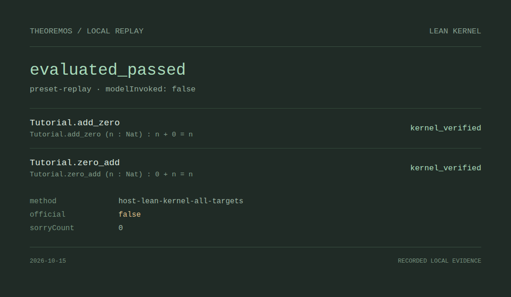

TheoremOS Proof archive
A research runtime for math agents · Lean proofs, verification records and research snapshots
Officially accepted
6Lean-Eval accepted
Research snapshots
1not yet accepted
Archived source
···lines of Lean
Snapshot date
2026-10-15
UTC · static archiveProblem / sourceStatus / updated
- Loading the proof archive…
No matching problems
Verification replay
A small natural-number addition problem · recorded candidates · no model calls
What the replay shows
Recorded example- Problem
- Natural-number addition · Lean standard library
- Candidates
- A failing candidate first, then the repaired proof
- Model
- No model calls and no API key
- Verification
- An independent Lean pipeline checks the full statement
The replay shows how TheoremOS records candidates, checks and repairs, and how evaluated_passed on the full statement is the verification result. Once the online workbench opens, you can run your own problems in the browser.
Replay verification record
Independent Lean check
evaluated_passed
The full statement passed independent verification. Official Lean-Eval results are listed in the proof archive.